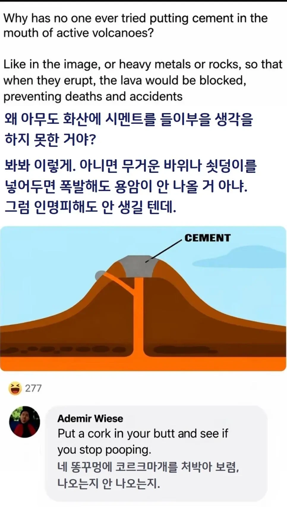

화산 댐같은건 못만드나?
바다 : ??
화산이 지구의 똥구멍이여
시멘트 메테오
폭발력만 더 생길듯
안쪽에 분화구 너비는 일정한가?
만약 아래로 갈수록 커지면 산 윗둥을 폭발이든 뭘로 걷어내면 안될까 공기랑 맞닿는 표면적을 늘리는거지
흐르는 용암은 주변에 크게 원으로 구멍 파두고 하수도? 작업하는거처럼
챔버가있고 안에서 가스가 새어나옴 위에 다굳었는데 가스차서 터지면 씹재앙임
마그마 500배!
저대로 100년만 하면 확실하게 멸종 시킬수 있겠네
핵불닭 먹고 똥꼬를 코르크로 막는다?
이미 막아놔서 입으로 똥싸고 있잖아
저게 그 크레모아인가 머시기 아니냐
지루한설명은 안하는편이시네
차라리 사이드에 구멍 파서 마그마 빼는게 더 나을듯
용암을 조금씩 빼는것도 안됨?조금씩 퍼담으면 나중에 터젓을때 조금이라도 안전해지는거아님?
님 설사 끊어 쌀 수 있음?
그렇게 하자는 얘기도 있는데 그러다 터지면 어쩔거냐고 물으면 대답하기 어려워서 ㅎㅎ;;
파편 수류탄으로 진화
화산이 계속 꿀럭 꿀럭 나와줘야 안터지는거라규 ㅋㅋ
터지면 저 공구리가.메테오가.되겠네
암반이 시멘트보다 더쎄지않나